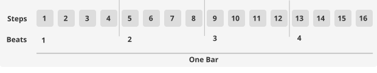
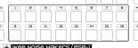
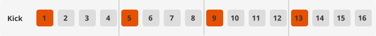
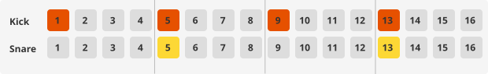
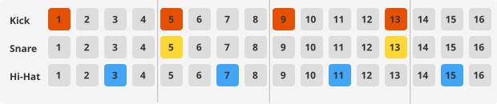
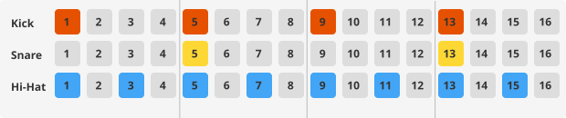

Rhythm Basics¶
This chapter introduces the fundamental concepts of rhythm and sequencing.
What is Rhythm?¶
Rhythm is simply a pattern of sounds over time. When you tap your foot to music, you’re following its rhythm. Every song has a rhythm that repeats, making it predictable and easy to follow.
Tempo and BPM¶
Tempo is how fast or slow the music plays. It’s measured in BPM (Beats Per Minute).
BPM Range |
Feel |
Common Genres |
|---|---|---|
60-80 |
Slow, relaxed |
Ballads, ambient |
80-100 |
Moderate |
Hip-hop, R&B |
100-120 |
Upbeat |
Pop, house |
120-140 |
Energetic |
Techno, EDM |
140+ |
Fast, intense |
Drum & bass, hardcore |
On the PGB-1, you can adjust tempo by holding Play and pressing ← or →.
Beats and Bars¶
Music is organized into beats and bars (also called measures):
A beat is a single pulse in the music - like one tap of your foot
A bar contains a fixed number of beats grouped together
Most electronic music uses 4 beats per bar (called 4/4 time)
When you count “1, 2, 3, 4, 1, 2, 3, 4…” along with music, each number is a beat, and each group of four is one bar.
Steps on a Sequencer¶
The PGB-1 features a step sequencer. Instead of recording music in real-time, you place notes on a patterns of steps and the sequencer will play the steps one after the other give the selected tempo (BPM).
The default length of a pattern is one bar, divided into 16 steps:

On the PGB-1 they are aranged in two lines 8 steps. Each of the buttons 1 to 16 represent a step of the pattern.

Steps |
Position in Bar |
|---|---|
1, 5, 9, 13 |
On the beat (downbeat) |
2, 6, 10, 14 |
Second sixteenth note |
3, 7, 11, 15 |
Third sixteenth note (off-beat) |
4, 8, 12, 16 |
Fourth sixteenth note |
Note
Musicians often count sixteenth notes as “1-e-and-a, 2-e-and-a, 3-e-and-a, 4-e-and-a”. Steps 1, 5, 9, 13 are the numbers; steps 3, 7, 11, 15 are the “and”s.
Common Drum Patterns¶
Here are some classic patterns to get you started. Each diagram shows 16 steps across one bar, with colored cells indicating active steps. Vertical lines separate the four beats.
Four on the Floor (Kick on every beat)¶
This is the foundation of house, techno, and disco - a kick drum on every beat (steps 1, 5, 9, 13):

Backbeat¶
Add snare on beats 2 and 4 (steps 5 and 13) for a driving feel:

Off-Beat Hi-Hats¶
Hi-hats on the off-beats (steps 3, 7, 11, 15) create movement and groove:

Eighth-Note Hi-Hats¶
For a busier feel, add hi-hats on every other step (1, 3, 5, 7, 9, 11, 13, 15):

Shuffle and Swing¶
Real drummers don’t play with perfect timing. Shuffle (or swing) slightly delays the off-beat notes, making the rhythm feel more human and groovy.
On the PGB-1, you can add shuffle to any track in Track Mode:
Press Track to enter Track Mode
Navigate to the Shuffle page using →
Use ↑ to increase the shuffle amount
Tip
A little shuffle goes a long way. Start with low values and increase until you feel the groove.
Patterns and Songs¶
The PGB-1 organizes music at multiple levels:
Level |
Description |
PGB-1 Feature |
|---|---|---|
Step |
A single note placement |
Buttons 1-16 in Step Mode |
Pattern |
16 steps that repeat (can be linked for longer motifs) |
|
Song Part |
Multiple patterns playing together |
This hierarchy lets you build complex music from simple building blocks.
Next Steps¶
Now that you understand rhythm basics, you’re ready to learn more:
Your First Project - Step-by-step guide to making a beat